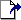
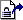
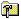
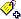
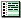
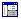

About the Tool Bar
The tool bar provides shortcut buttons for performing commonly used functions, such as check in, check out, lock, and unlock. Administrators can customize the toolbar by adding custom icons that invoke other applications from the tool bar. Tool bar information is stored in a tool bar configuration file, which Administrators associate with project databases. When a tool bar configuration file is associated with a project database, the tool bar loads automatically whenever the project database is opened or selected.
| Click this button... | To do this... |
 | Create a new project |
| Add workfiles to a project or project database |
|  | Get a revision |
|  | Check out a revision |
 | Check in a workfile |
|  | Set the workfile location |
 | Unlock a revision |
| Lock a revision |
|  | Assign a version label |
 | Promote to the next promotion group |
|  | Show History report for an item |
 | Show differences for an item |
|  | Toggle the revision pane |
 | Filter the file pane recursively (through all projects) |
 | Filter the file pane nonrecursively (not through any projects) |
| Load Serena Trackerlink |
See Also